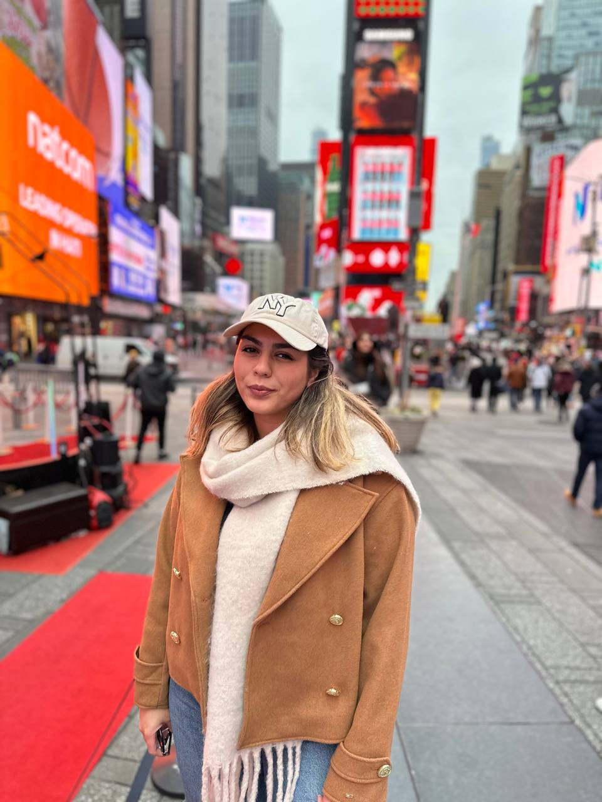
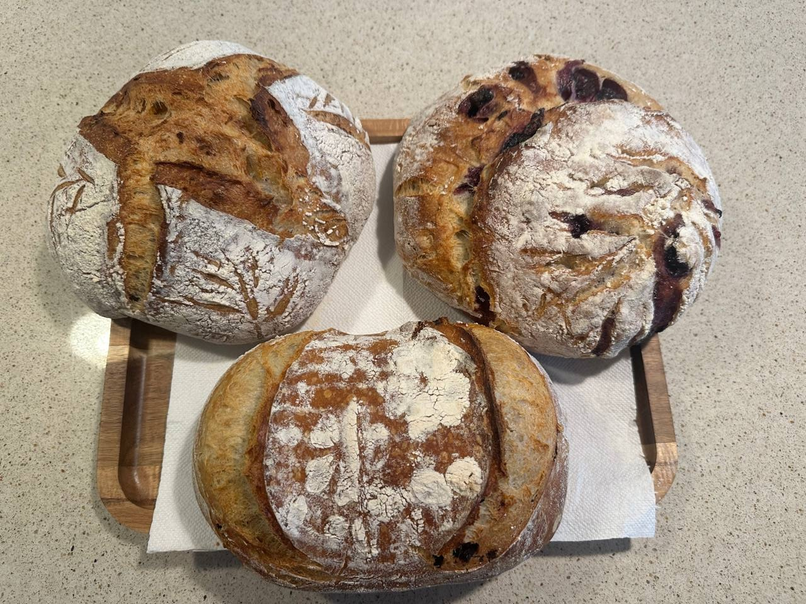
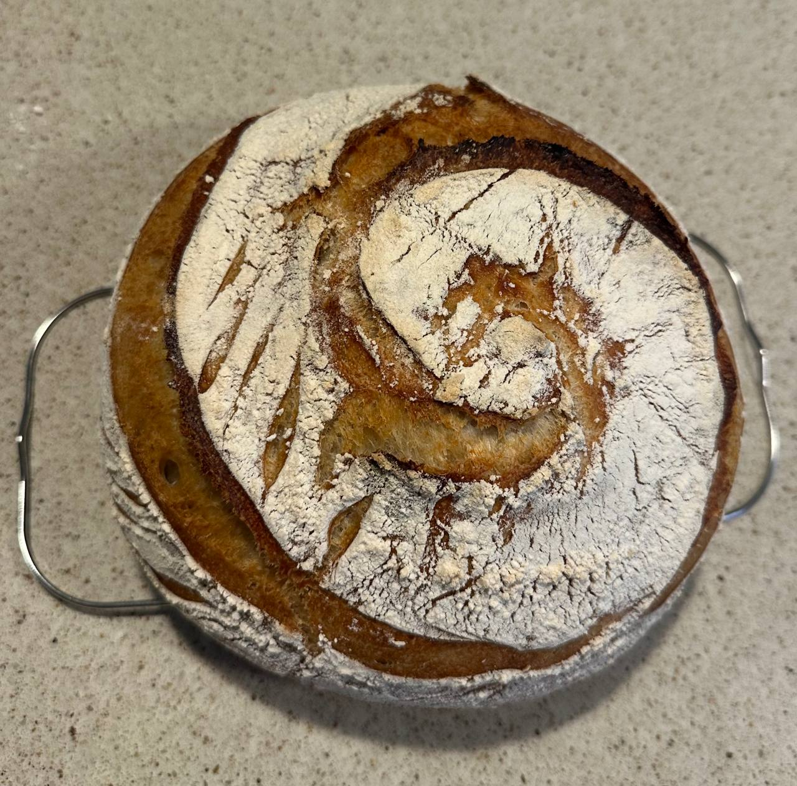
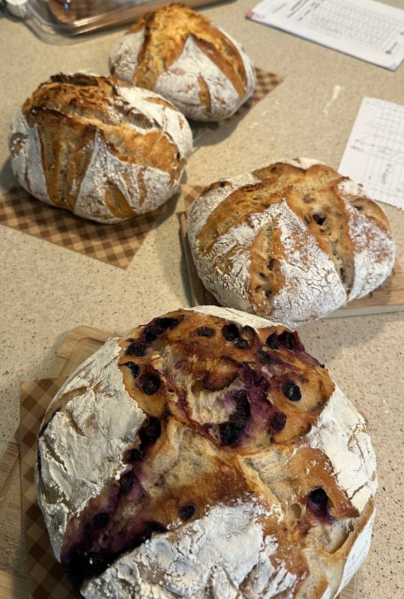
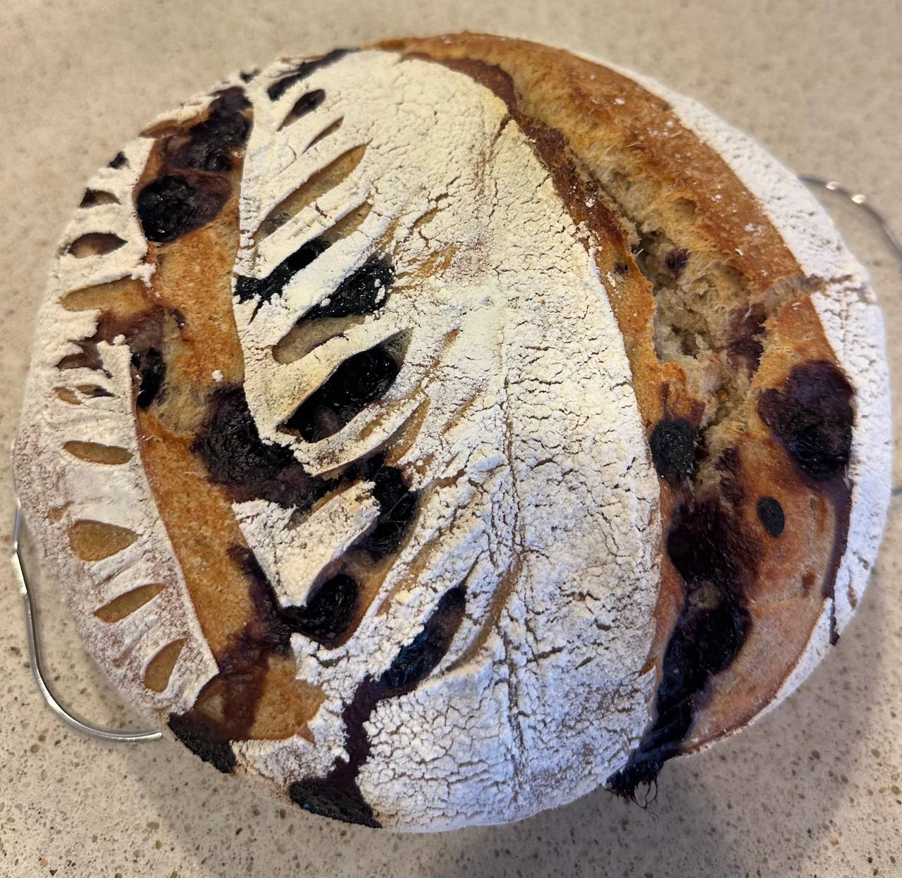
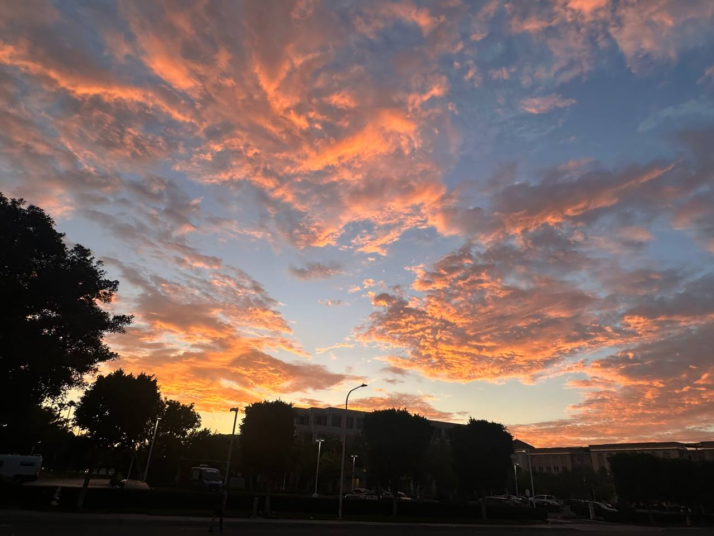

Shakiba Ahmadimehr
Biomedical Engineer & Data Analyst
Biography
I am a Biomedical Engineer & Data Analyst specializing in neuroimaging analysis, brain data analytics, and machine learning.
My work focuses on uncovering functional and structural brain patterns through advanced quantitative models, fMRI signal modeling, and machine learning pipelines.
Outside the IDE, you'll usually find me baking artisan sourdough bread 🍞 or out exploring nature during golden-hour walks 🌅.
Graduate Researcher
Sep 2024 – Jun 2025Sanger Lab (Prof. Terence David Sanger) • UC Irvine
- Neuroimaging & Tractography: Processed structural MRI/DTI datasets, utilizing FreeSurfer to parcellate cortical and subcortical regions and mapping contralateral fiber connections between targeted brain areas using MRtrix.
Teaching Assistant
Oct 2024 – Jun 2025UCI Samueli School of Engineering • Full-time
- Graded assignments and provided detailed, constructive feedback to support students' academic growth and enhance learning outcomes.
Graduate Research Fellow
Sep 2023 – Sep 2024Biomedical Engineering Department • UC Irvine
- Received a 1-year Fellowship from the BME Department as a first-year Ph.D. student to conduct lab rotations across multiple research units.
- Completed my primary lab rotation in the Visual Perception & Neuroimaging Lab (VPNL) under the supervision of Prof. Emily Grossman, focusing on human subject fMRI methodologies.
Research Assistant
Aug 2022 – May 2023
 Multiscale Bioimaging & Bioinformatics (MBB) Lab • Tulane University
Multiscale Bioimaging & Bioinformatics (MBB) Lab • Tulane University
- Conducting research under the supervision of Prof. Yu-Ping Wang.
- Designed and developed machine learning and deep learning models to classify different types of fMRI time-series data.
Structural Connectivity Analysis
Diffusion Tensor Imaging (DTI) & Graph Theory
Quantified structural brain networks using DTI pipelines to analyze topological organization and network connectivity metrics.
Unsupervised Pattern Discovery
Unsupervised Machine Learning & fMRI
Applied clustering and unsupervised latent variable learning to discover hidden functional brain states across diverse fMRI datasets.
fMRI Signal Modeling & Brain Decoding
Finite Impulse Response (FIR) & Classification
Reconstructed fMRI time-series dynamics using FIR modeling and classified cognitive states (cued vs. uncued tasks) using supervised classifiers.
Evaluation of Brain Connectivity in Parkinson's Disease
Master's Thesis Research | Resting-State fMRI
Investigated functional connectivity (extracted as networks via Independent Component Analysis) and effective connectivity using time-series data mapped to the AAL atlas.
Investigation of linear & non-linear connectivity
Research Paper & Preprint
Comparative analysis of linear and non-linear functional connectivity estimation methods in neuroimaging signals.
📄 Read Linear & Non-Linear Connectivity Paper (PDF)Alteration of resting-state brain networks in Parkinson's disease
Multi-aspect study of functional and effective connectivity
Comprehensive evaluation of resting-state network alterations combining multi-aspect connectivity models in Parkinson's disease.
📄 Read Parkinson's Disease Brain Networks Study (PDF)Ph.D. Student in Biomedical Engineering
Sep 2023 – Jun 2025University of California, Irvine
Completed doctoral-level coursework and research rotations focusing on neuroimaging and machine learning models.
Master of Science (M.Sc.) in Biomedical Engineering
Sep 2019 – Jan 2022Specialization: Neuroimaging, Brain Decoding & Machine Learning
Focused on computational modeling of brain data, advanced signal analytics, and machine learning techniques applied to medical diagnostics.
Bachelor of Engineering (B.E.) in Biomedical Engineering
Sep 2015 – Feb 2019Core Engineering & Systems Foundations
Coursework in biomedical instrumentation, signals and systems, bio-statistics, and foundational programming.
🍞 Artisan Sourdough Baking
FERMENTATION & FLAVOR EXPERIMENTS
Passionate about crafting high-hydration slow cold-fermented sourdough, featuring both traditional artisan loaves and custom creations like blueberry lemon sourdough.
🍞 Traditional Artisan Sourdough
CLASSIC FERMENTATION
A high-hydration, 24-hour slow cold fermentation yields a blistered golden crust, deep tangy flavor, and light, airy crumb structure.
Ingredients & Ratios
- Bread Flour: 800g
- Water: 540g–560g (~68–70% hydration)
- Active Starter: 160g
- Salt: 16g
📷 View Traditional Loaf Photos


🍋🫐 Blueberry & Lemon Sourdough
FAVORITE FLAVORED LOAF
A bright, fruit-infused artisanal loaf featuring fresh lemon zest incorporated into the dough and juicy blueberries layered during lamination.
Baker's Add-ins
- Base: Classic sourdough dough recipe
- Fresh Lemon Zest: Zest of 1–2 organic lemons
- Blueberries: ~100g (lightly dusted in flour)
- Technique: Folded in during final lamination sets
📷 View Blueberry Lemon Photos


🌿 Ocean & Nature Trails
COASTAL EXPLORATION
Exploring coastal pathways and nature walks away from computational pipelines.
📷 View Nature Trail Photos
🌅 Sunsets & Golden Hour
EVENING LIGHT PHOTOGRAPHY
Capturing golden-hour hues and vibrant evening horizons.
📷 View Sunset Photos
